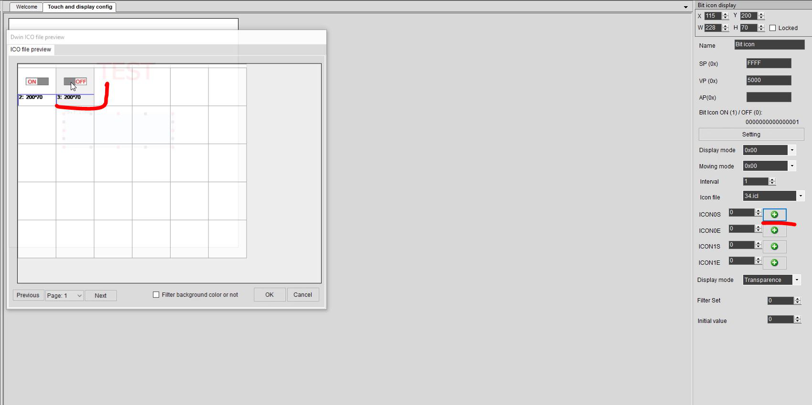

Управление нагрузкой с дисплея DWIN
22 августа, 2022
Приобрести можно тут: http://alii.pub/6frzyh
Купон: https://a.aliexpress.com/_ondQmyz?spm=5261.26790180.Table.6.46da4edfBPgADRx
Промокод для заказа дисплея DWIN: Y42U70K1MZ56
Esp32: http://alii.pub/6c9kzh
Arduino: http://alii.pub/6ahstu
Реле: http://alli.pub/5pwfhj
Прежде чем приступить к материалу, я Вас попрошу, если нравится то, что я делаю и хотите следить за моей деятельностью, то рекомендую подписаться на мой телеграмм канал: https://t.me/ypavla
Там я публикую новости о вышедших видео, статьях и разные устройства для умного дома и не только показываю.
Спасибо за внимание, теперь продолжим.
Мой HMI дисплей ёмкостный – это означает, что он очень хорошо реагирует на касания. Прям как Ваш смартфон. И тактильно очень приятный экран. Так-же он очень шустро работает. Прям летает.
Этим дисплей и выигрывает аналоги Nextion. Они по сравнению с dwin подтупливают.
Так-же дисплеи dwin дешевле дисплеев nextion. Что тоже дает “монетку в копилку DWIN”.
На мой взгляд единственное в чем проигрывают дисплеи nextion, так это в том, что на них нет никаких библиотек и очень мало примеров под микроконтроллеры. В этом плане Nextion конечно на 3 головы впереди.
Но я думаю, что это скоро изменится. DWIN активно стали продвигать дисплеи свои и давать неплохие скидки на них. Я думаю они в скором времени обрастут своими фанатами и примерами. И я постараюсь в этом помочь). По этому и пишу эту статью.
В этой статье я покажу как на дисплей добавить кнопку при нажатии на которую будет включаться или выключаться реле.
Для начала нам надо установить программу DGUS. Это программа как Nextion Editor, предназначена для того, чтоб создавать интерфейс на дисплее и программировать дисплей.
Скачать программу можно отсюда: https://www.dwin-global.com/tool
Итак – поехали.
Запускаем программу DWIN DGUS.
Нажимаем на кнопку “New”
В открывшемся окне, выбираем разрешение экрана. У меня это 480×480 и выбираем папку проекта. У меня это dwin_test1
Далее снова переходим на главный экран 1. “Welcome” и нажимаем кнопку 2.”DWIN ILC Generator” и на вкладку “CFG Edit”
В открывшемся окне выставляем 3. “Backlight sleep” на “On” . Далее 4. “Touch-sensitive Variable Changes Update” – выставляем “Auto“.
5. “Time to wake up/10ms” выставляем 500.
Ну и нажимаем кнопку 6. “New CFG” Там пишем имя T5LCFG.CFG и нажимаем сохранить.

После сохранения закрываем окно.
После этого я создал в фотошопе белый фон разрешением 480×480 и написал на нем слово “TEST” и создал две кнопки, с названием ON и OFF. Все эти файлы в формате .jpg
Далее файл с фоном, я положил в папке проекта и подпапку image.
А картинки кнопок в папку с проектом в подпапку “ICON”
Далее опять переходим на экран “Welcome” и нажимаем кнопку .”DWIN ILC Generator“. Там открываем вкладку “ICL Tool“.

В открывшемся окне выбираем 1. “Select Pictures” там выбираем файл фона который мы создали ранее. Он уже выбран и числится под цифрой 2. на картинке.
И нажимаем кнопку Generate ICL.
После нажатия этой кнопки откроется окно с сохранением.
Выбираем папку для сохранения -> Папка проекта и подпапка DWIN_SET. Файл называем 32.icl и нажимаем кнопку сохранить.
Далее закрываем окно “DwinPCKits-ICL Tool” и открываем снова DWIN ILC Generator
И проделываем описанную выше процедуру, только уже для двух кнопок и сохраняем под названием 34.icl
По окончанию этих процедур у нас в папке с проектом и подпапке с названием “DWIN_SET” должно быть 3 файла как показано на картинке ниже.
Все, подготовку картинок мы закончили. Теперь переходим на вкладку “Touch and display config”
Там нажимаем на кнопку “+” чтоб добавить фон на экран программы.
Фон выбираем в формате .jpeg
После этого у нас на экране появится картинка фона, она и будет служить полем дисплея.
На нее давайте добавим кнопку. Для этого перейдем на вкладку “Display Control” и там выберем “Bit icon”. А далее мышкой выделим область какого размера будет кнопка.
Далее при выделении Bit icon в правой части программы DGUS в “Bit icon display” нужно проставить в пункте VP(0x) параметр 5000.
А в графе BITICON ON(1)/OFF(0). Поставить битность. Так как у нас будет одна кнопка, то поставим 0000000000000001. Как показано на скрине. Это значение в двоичной системе счисления будет отправляться в монитор порта при нажатии кнопки. Контроллером собственно мы его и будем улавливать. И если у Вас несколько кнопок, то уже следующим назначаете другие адреса. Например 0000000000000011. и так далее.
Далее в этом же окне “Bit icon display” В графе “Interval” выставляем “1“. А в поле “Icon file” выбираем кнопку которую мы создавали в формате .icl. Мы ее создавали с номером 34.icl.
Далее в этом же окне ниже идут такие параметры (ICON0S, ICON0E, ICON1S, ICON1E). Вот для пунктов ICON0S и ICON1S нужно выбрать кнопки соответствия. А именно ON и OFF.
Причем ICON0S – это OFF, а ICON1S соответственно ON.

На этом настройка кнопки закончена. Но она не будет работать. Мы сейчас добавили грубо говоря 2 картинки. Одна из которых Будет отображать название ON, а другая OFF.
Следующим шагом нам нужно навесить сенсор касания на обе эти части, чтоб поле кнопки работало как ползунок и при нажатии на определенную область этой импровизированной кнопки, она у нас срабатывала как настоящая кнопка.
Переходим на вкладку Touch Control, выбираем там “Return Key Code” и выделяем область где этот тач будет работать. После выбора размера и размещения этого блока, в правой части программы в настройках “Return Key Code” Выставляем параметры:
В key value(0x) нажимаем кнопку “Set” и выбираем “1” и эта единица получает код 0x2131.
Ставим галочку “Data auto-uploading”
Ну а в поле “VP(0X)” вписываем параметр 5000.
Далее просто копируем “Returne key code” и в правой части меняем у key value(0x) нажимаем кнопку “Set” выставляем цифру “2” код у нее получится “0x4032”
И VP(0x) тоже выставляем 5000
На этом шаги настройки закончены. Проект под дисплей DWIN сделан.
Чтоб загрузить этот проект в дисплей DWIN. Нам нужно флешку не большого размена в формате FAT32.
И из папки проекта, нам нужно перекинуть на флешку папку “DWIN_SET” совсем содержимым. Чтоб на флешке был только папка “DWIN_SET”
НУ а далее флешку с содержимым DWIN_SET вставляем в дисплей DWIN и подаем на него питание.
После подачи питания, начнется прошивка экрана.
Нужно дождаться команды “SD Card Process. . . END!”
После окончания прошивки, нужно выключить дисплей, вытащить флешку и включить дисплей заново. И он загрузится уже с новой прошивкой.
Теперь идем к программе на микроконтроллер. Я буду использовать esp32.
Так, как дисплей отправляет данные по uart, то я его подключаю ко второму уарту, который находится на пинах rx – 16 и tx – 17.
Программу для микроконтроллера можно скачать отсюда: https://disk.yandex.ru/d/qAFkjtL9BsdDrw
После загрузки скетча, нам нужно определить какую информацию отправляет DWIN дисплей в UART после нажатия на кнопку. Для этого открываем монитор порта и смотрим:
Я нажал кнопку ON и OFF и получил вот такую информацию. Видим что меняются только цифры 33 и 64. Их запоминаем. И В скетче их вставляем:
Вот и все. Теперь мы пользуясь этим примером с легкостью можем добавлять еще реле не ограничиваясь одной.